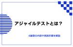

直近1週間の更新
8/9 (金)
アジャイルカフェ@オンライン 第57回に参加してきた 天の月
agile-studio.connpass.com こちらのイベントに参加してきたので、会の様子と感想を書いていこうと思います。 会の概要 会の様子 コンテキストの確認 不安の原因 説得することで得たいものはなんだろう？ 上手に説得(説明)するコツ 会全体を通した感想 会の概要 アジャイルコーチの木下さん、家永さん、天野さんのお三方がアジャイル実践者からの悩みに対して色々な角度で回答をしていくイベントです。 今回のテーマは、「過去に成功したチームと同じことをしていないと不安なマネージャを説得するにはどうしたら良いですか？」でした。 会の様子 コンテキストの確認 まず、話のコンテキストとして、 …
1日前
8/8 (木)

認証されたアクセス LLMにおけるQAで抑えておきたいキーワード
Zennの「QA」のフィード
認証されたアクセスとは LLM（Large Language Models）における「認証されたアクセス」は、システムやデータへのアクセスを許可されたユーザーやアプリケーションに限定するプロセスを指します。これは、モデルの品質保証（QA）とセキュリティの観点から非常に重要な要素です。以下にそれぞれの観点から詳しく説明します。 https://youtube.com/shorts/ZsTr0tFQct0?feature=share QA（品質保証）の観点からの認証されたアクセス 一貫したデータ品質の維持 認証されたアクセスにより、データ入力やモデルへのフィードバックが信頼でき...
1日前
エンプラ企業DXの成功事例（もっと良くなる日本のIT vol.1 ） SHIFT EVOLVE グループの新着イベント
開催日時: 2024/09/04 19:30 ～ 20:50<br />開催場所: 東京都港区麻布台1-3-1<br /><br /><h2>エンプラ企業DXの成功事例（もっと良くなる日本のIT vol.1 ）</h2> <p>SHIFTの技術顧問川口耕介氏を迎えての対談企画。お相手は川口氏が自ら選出！</p> <p>アメリカで最先端の技術を開発し活躍する彼が思う、日本のITの未来とは。</p> <p>日本のエンタープライズ企業でDXの導入に成功した小野和俊氏を迎え、どうすれば日本のITがより良くなっていくのか、ディスカッションしていただきます。</p> <h2>SHIFT技術顧問 川口耕介氏よりメッセージ</h2> <p>飛行機に乗ったら、出来るだけ隣の人に話しかけるようにして何年か経った。知らない人と話すのがとても楽しいのである。自分の知らない世界の扉を開き、覗き見る喜び。若い頃は、見知らぬ人に話しかけるなんぞ、苦痛以外の何物でもなかった。歳をとって、ちょっと謙虚になったのかもしれない。あるいは、アメリカ暮らしで知らない人と会話するのに慣れたのかもしれない。</p> <p>知らない...
1日前
QAと開発チームの連携どうしてる？〜品質文化醸成の取り組み編〜に参加して 天の月
findy.connpass.com こちらのイベントに参加してきたので、会の様子と感想を書いていこうと思います。(時間の関係でラスト15分は抜けました) 会の概要 会の様子 ワンチームで勝つ：QAとエンジニアの協業を超えた連携の実践例 品質富士山 サービス品質を向上させるための取り組み プロダクト品質を向上させるための取り組み プロセス品質を向上させるための取り組み 組織品質を向上させるための取り組み 大事にしていること (質問) スクラムの中でQAはメンバーとしてどんなことをしているのか？ (質問) QAと開発がリモートで物理的に壁がある場合どのようにコミュニケーションをするのか？ 品質の…
1日前
8/7 (水)
オブジェクト指向のこころを読む会 Vol28に参加してきた 天の月
yr-camp.connpass.com 今週もこちらのイベントに参加してきたので、会の様子と感想を書いていこうと思います。 再帰と反復 なぜn^3になるのか？ メモ化 全体を通した感想 再帰と反復 反復は再帰と比較して、TCOを使うなどスタックフレームを節約することができるし、計算量も減るため、(メモ化などを使わない場合は)高速であるという話を確認していきました。 確認は、実際にコードレベルで書いてみて、(メモ化などを使わない)再帰のほうが処理がどうしても多くなってしまうよね、というのを考えていきました。 再帰(factorial 6)=(* 6 (factorial 5))=(* 6 (*…
2日前

LLM（大規模言語モデル）LLM QA キーワード解説 Zennの「QA」のフィード
LLMとは LLM（大規模言語モデル）は、自然言語処理（NLP）の分野で使用される機械学習モデルであり、大量のテキストデータを学習して自然言語を理解し、生成する能力を持っています。これらのモデルは、言語の統計的パターンを把握するために数億から数千億のパラメータを持つことが一般的で、非常に大規模なニューラルネットワークアーキテクチャに基づいています。以下では、LLMの品質保証（QA）の観点から、その重要性、応用、課題について詳しく解説します。 https://youtube.com/shorts/hfduTP2tVwU LLMの重要性 自然言語理解と生成 LLMは、文章の意味...
2日前

2024.08.07ナレッジNEW アジャイルテストとは?4象限の内容や実践手順を解説 アジャイル ソフトウェアテスト ウォーターフォール スクラム イテレーション XP ナレッ... メディア | HQW!
2024.08.07 ナレッジ NEW アジャイルテストとは?4象限の内容や実践手順を解説 アジャイル ソフトウェアテスト ウォーターフォール スクラム イテレーション XP ナレッジ
3日前
8/6 (火)
JSTQBテストアナリスト試験の出題ポイントについて考えてみた ソフトウェアテストタグが付けられた新着記事 - Qiita
ISTQB公式サイトにはAdvanced level資格試験のサンプル問題が掲載されていますが、2024年8月現在、まだ日本語訳されていません。しかし公式の問題集が他にないことを考えると、Advan…
3日前
大人のソフトウェアテスト雑談会 #224【その気になれば】に参加してきた 天の月
ost-zatu.connpass.com 今週もテストの街葛飾に行ってきたので、会の様子と感想を書いていこうと思います。 FAST プロダクトのゆるやかな死 スーパーPdM BeReal LINE VS Webアプリ 全体を通した感想 FAST LeSSやScrum@Scaleといったやり方も候補に挙がる中FASTを採用したのは、少なくとも日本では誰もやっていないから楽しそうだという理由で採用したという話がありました。 色々本を読んでどれどれと様子を見ながらやるのも面白いけれど、誰もやったことがなくてリファレンスも何もないようなことをやっていくのが一番おもしろいというお話がありました。 また…
3日前

TEVVにおける妥当性確認 LLM QA キーワード解説 Zennの「QA」のフィード
TEVVにおける妥当性確認とは TEVV（試験、評価、検証、妥当性確認）とは、システムやソフトウェアの品質を保証するための重要なプロセスです。これは特に、機械学習モデルや大規模言語モデル（LLM: Large Language Models）においても適用されます。以下では、LLMの品質保証（QA）の観点から、TEVVの各要素について詳しく解説します。 https://youtube.com/shorts/hnTTIzJThqU?feature=share 妥当性確認（Validation） 目的 妥当性確認は、LLMが実際の使用環境で期待された機能を提供し、ユーザーのニーズを...
3日前

gomockによる共通処理モック時のジレンマを解決したい 1Zennの「Test」のフィード
1Zennの「Test」のフィード
開発一般の話として複数の関数に記述された共通処理を別の関数に切り出すことはよくあると思います。 Go言語で同様の対応を行ってテストを書いてみたのですが、モックまわりでいろいろと課題があるように感じました。 この記事ではGo言語における共通処理の切り出しとモック化の課題について解決策を探っていきます。 なおモックの作成にはgomockを使用します。 共通処理をモック化するときの課題 usecase層にパブリックな関数Aと関数Bがあり、共通の処理を関数Cとして切り出すことを想定します。 関数Cはusecase層内でのみ使用できるようにしたいので、プライベートな関数として定義します。 pa...
4日前
8/5 (月)
スクラムフェスバンパク(一応仮称)を開催します 2天の月
タイトルの通り、スクラムフェスバンパクという名のスクラムフェスを開催したいと思っているので、今日はその告知になります！ 日程 どういう場なのか？ 開催経緯 名付けの経緯 おわりに 日程 スクラムフェス大阪の日程にもよるので確定ではないのですが、2025/6/6〜2025/6/7に開催しようと思っています。 どういう場なのか？ 以下のような目的を掲げる場にしたいと思います。 地域を通して、アジャイル・スクラムの実践者、これから実践しようとしている人たち同士の強いつながりを作る 地域同士がオンラインを通して繋がり、アジャイル・スクラムの知見を集積するような場を作る アジャイル、スクラムについての知…
4日前
プレイングマネージャーになると大変 Testan4818
現代のソフトウェア開発において、QAエンジニア（Quality Assurance Engineer）の役割はこの業界にいると、うれしいことにますます重要性を増しています。 特に、プレイングマネージャー（Playing Manager）としてのQAエンジニアは、技術的な作業とマネジメントの両方をこなさなければならないため、独自の悩みや課題に直面することが少なくありません。 今回は、プレイングマネージャーとしてのQAエンジニアが抱える代表的な悩みと、その対策を少し考えてみました。 多岐にわたる業務のバランス 続きをみる
4日前

NIST AIフレームワーク LLM QA キーワード解説 Zennの「QA」のフィード
NIST AIフレームワークとは NIST AIフレームワーク（NIST AI Framework）は、アメリカ国立標準技術研究所（NIST: National Institute of Standards and Technology）が策定した、人工知能（AI）システムの開発、運用、および評価に関するガイドラインです。このフレームワークは、AI技術の品質、信頼性、安全性を確保するための標準的な手法を提供します。以下では、LLM（大規模言語モデル）の品質保証（QA）の観点からNIST AIフレームワークについて詳しく解説します。 https://youtube.com/shorts...
4日前
8/4 (日)
「脱！なんちゃってスクラム」実践事例から学ぶ Lunch LTに参加してきた 天の月
findy.connpass.com こちらのイベントに参加してきたので、会の様子と感想を書いていこうと思います。 会の概要 会の様子 1人だけ知ってても回らないスクラム 現職と前職で感じたスクラムの違い スクラムの成熟と壁 〜スケーリングの議論から見えたもの〜 300人の組織でスクラムを運用するための考え方 会全体を通した感想 会の概要 以下、イベントページから引用です。 アジャイル開発の１つのフレームワークであるスクラム。昨今では、アジャイルコーチやスクラムマスターの役割も一般的になりつつあり、実際に取り組む組織も多くなっています。その一方で、「スクラムを実践しているがあまり上手くいってい…
5日前

AWS Lambda の Container Runtime を GitHub Actions で E2E テストしたい時の備忘録 Zennの「Test」のフィード
AWS Lambda の Container Runtime を GitHub Actions で E2E テストしたい時の備忘録 はじめに 機械学習のAPI提供として AWS Lambda の Container Runtime を使うことがよくあります。 pytest などを用いて開発環境で unit test はよく行いますが、さらにDocker Container としての成果物の E2E テストをすることでより安全性を高めることができます。 今回はこの E2E テストを GitHub Acitons 上で行うための備忘録です。 ほとんどの内容は以下のブログ記事を参考にし...
5日前

QA・コミュニケーションアンチパターン バグを見つけてくれた Podcast Zennの「QA」のフィード
Podcast https://podcasters.spotify.com/pod/show/-qa-in-devops/episodes/QA-e2lvsvv YouTube https://youtu.be/LvjvtyEUG4A
5日前
認知バイアスって不思議！ハロー効果とは？ つーつー
QAエンジニアのつーつーです！ 今回は皆さんが一度は体験したことがあるハロー効果についてお話したいと思います！ 何それ？と思ったそこのあなた。「○○さんが言うなら間違いない！」など日常的にその人が発言した内容よりも誰が発言したか、ということで評価したことありませんか？私は良くあります😁 これが「ハロー効果」と呼ばれるものになります。 続きをみる
5日前

テスト自動化実践ガイドは目的も実践もほしい情報が揃っていて、まさにガイドでした 1Zennの「Test」のフィード
こんにちは。ダイの大冒険ガチ勢のbun913と申します。 みなさんはテスト自動化を推進していますか？ 私は職責上SDET(Software Development Engineer in Test)として、「どんなメリットを受けたいからこういうテストレベルで、こういうことをやっていきましょう」「このテストはこのレベルで保証したテストをしてくれるとありがたいです」というコミュニケーションを取る必要が求められます。 例えばどんどんシフトレフトを進めていくにしても、当然E2Eテストでしか得られない栄養（安心感）があるので、そこも含めて「じゃあどんなことを自動化するのかな」「単体テストとは被るけ...
5日前

アクティブリコール＆近況 Zennの「Test」のフィード
夏期講習真っ只中です。 暑い日が続きますが、生徒たちと一緒に頑張っています。 インプット（過去問を解いたり）するときは、常にアウトプット（生徒にわかりやすく伝える）ことを意識していますが、プログラミング学習も同じで、新しいことを学ぶ時は常に誰かに教えることを意識して練習してます。 最近、MX ERGOというマウスを購入して使っています。これまでの習慣で気づいたらトラックパッドに手を置いてしまいます。MacbookAirを使っていますが、おすすめの設定方法があれば教えて下さい><; アクティブリコール 4月から本格的にプログラミング学習をはじめて、限られた時間の中で多くの...
6日前
8/3 (土)
スクラムフェス金沢のふりかえり番外編(キャッシュフロー更新)をしてきた 天の月
www.scrumfestkanazawa.org 今日はスクラムフェス金沢のふりかえり番外編(キャッシュフロー更新)をしてきたので、その様子と感想を書いていきます。 本ブログの注意事項 予算の更新 どこに予算を使っていくといいのか？ 本ブログの注意事項 キャッシュフロー更新をしたのですが、キャッシュフローの詳細は一般の人は見えないようになっているため、具体的な金額や内訳など具体的な内容に関してはブログで触れないようにします。 具体的な金額や内訳が分かるからこそ学びになったり、カンファレンス運営の考え方につながる部分もあったりするので、もしそういう内容に興味がある方は、どこかしらのカンファレン…
6日前

RAG（Retrieval-Augmented Generation、検索補強型生成） LLM QA キーワード解説 Zennの「QA」のフィード
RAG（Retrieval-Augmented Generation、検索補強型生成）とは RAG（Retrieval-Augmented Generation、検索補強型生成）は、大規模言語モデル（LLM: Large Language Models）を強化するための手法の一つで、情報検索と生成モデルを組み合わせることで、より正確でコンテクストに沿った応答を生成する方法です。この手法は、生成された応答の信頼性と品質を向上させるために非常に有効です。以下では、LLMの品質保証（QA）の観点から、RAGの重要性と具体的な仕組みについて詳しく解説します。 https://youtube....
6日前

TestDispatcher完全に理解した Zennの「Test」のフィード
TL;DR プロダクションコードのDispatcherはとりあえず全部DIにしとこう 直列処理をテストしたいとき：runTest(UnconfinedTestDispatcher()) 並列処理をテストしたいとき：runTest + StandardTestDispatcherの注入 説明 DispatcherはDIしよう class DispatcherModule { fun provideIODispatcher: CoroutineDispatcher = Dispatchers.IO } class HogeRepository( priva...
7日前

Haskellのモックライブラリを作りました Zennの「Test」のフィード
Haskellのモックライブラリを作りました！ https://github.com/pujoheadsoft/mockcat Hackageはこちら。 Stackageは今のところNightlyにのみ入ってます(これ放っておいてもいずれLTSにも入るのかな？ →コメントで「入る」と教えていただきました)。 ざっくりとできること 大きく次の2つのことができます。 スタブ関数を作る 引数が期待通り適用されたかを検証する 検証は色々と行えますが、大概のケースではスタブ関数を利用するだけで事足りると思っています。 詳しくはドキュメントをご参照ください。 特徴 既存のモックライブラリ...
7日前